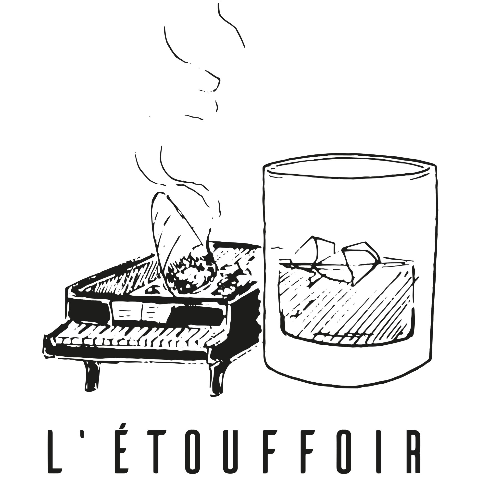

L'activité de notre entreprise est le commerce et la distribution de boissons. Nous souhaitons proposer aux consommateurs une gamme de produits frabriqués en France. Les produits proposés seront dotés d'une image prenium ou bien éthique (BIO, Nature, HVE, Demeter). Nous proposerons une gamme de prix assez larges pour plaire à toutes les bourses, les clients apprécient les bonnes affaires à petits prix. La majeure partie de notre offre sera haut de gamme car c'est l'image que nous souhaitons avoir.
Nous souhaitons pouvoir servir d'intermédiraire dans la distribution de BotB auprès de certaines enseignes de la restauration, les bars et la grande distribution en accord avec les producteurs.
Nous organiserons des évènements de dégustation dans les lieux socio-culturels (bar,golf,etc), des séminaires, des cocktails le tout en réalisant de la vente physique. Le but étant d'enrichir notre clientèle ainsi que développer notre image de marque.
La distribution passera par plusieurs canaux:
- La vente physique en magasin.
- La vente physique lors des évènements.
- La distribution en BtoB.
Ce projet est né de l'envie d'entreprendre de 3 amis du lycée. Ces 3 amis ont une passion en commun, le vin et les spiritueux, c'est donc tout naturellement que leur envie de quitter le salariat et de proposer une gamme qualitative est née. L'objectif étant de mettre en valeur notre terroir Français et ainsi de proposer une offre différenciante.